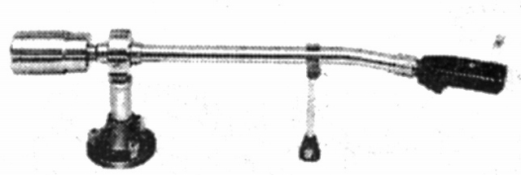

ST-940

■価格 6,200円■型式 スタティックバランス型■全長 351�o■実行長 247�o■オーバー・ハング 10�o■トラッキングエラー ■針圧範囲 0〜4g 0.5gステップ■アーム高さ調整 ■アームベース穴■アンチスケートディバイス ■アームリフター ■ラテラルバランサー ■カートリッジ自重 ■線間容量 ■発売 〜1970年■販売終了 1971〜72年頃■備考 価格は1970年頃のもの
サウンドのインデックスへ